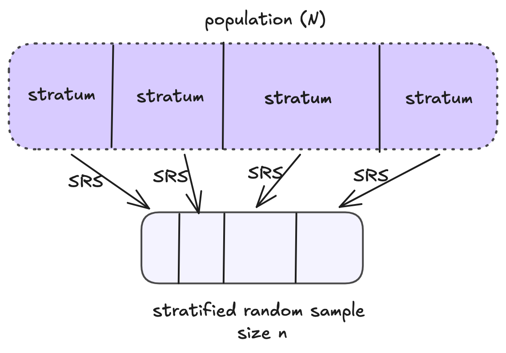
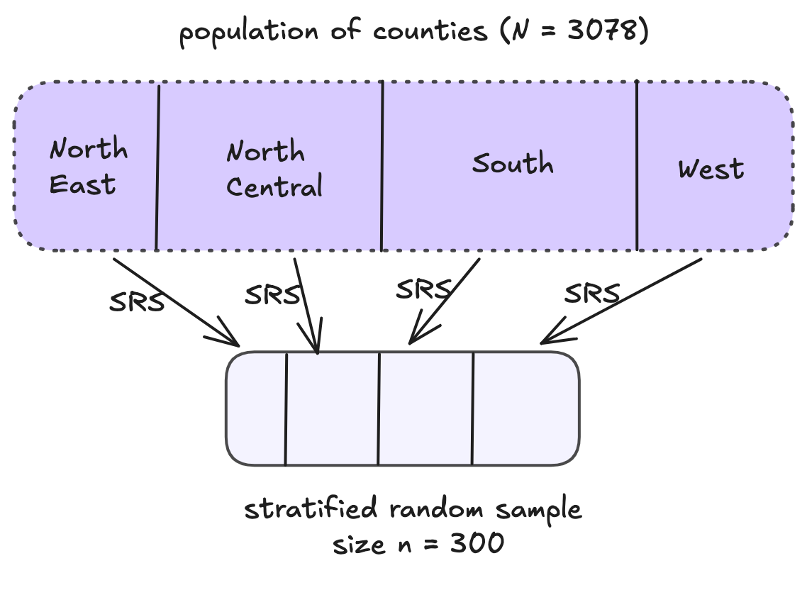

NC NE S W
1054 220 1382 422 Estimation with Stratified Random Sampling and Determining Sample Size

\(N\): population size (number of sampling units in the population)
\(n\): sample size
\(L\): number of strata
\(N_{g}\): number of sampling units in stratum \(g\)
\(n_{g}\): number of units selected from the \(N_{g}\) sampling units in stratum \(g\) (strata \(g\)’s sample size)
\(y_{gi}\): value of the \(i^{th}\) unit in stratum \(g\)
population parameters
\(\mu_g\): population mean of stratum \(g\)
\(\tau_g\): population total of stratum \(g\)
\(\sigma^2_g\): population variance of stratum \(g\)
sample statistics
\(\bar{y}_g = \frac{1}{n_g}\sum_{i = 1}^{n_g} y_{gi}\): sample mean for stratum \(g\)
\(s^2_g\): sample standard deviation of stratum \(g\)
\[ \begin{align} \tau &= \sum_{g=1}^L \sum_{i=1}^{N_g} y_{gi}\\ &= \sum_{g=1}^L \end{align} \] \[ \begin{align} \mu &= \frac{1}{N}\tau\\ &= \frac{1}{N}\sum_{g=1}^L\qquad\mu_g \end{align} \]
Overall population mean: \(\mu = \frac{1}{N}\cdot\tau\)
Overall population total: \(\tau = \displaystyle\sum_{g = 1}^L \tau_g\)
Since the sample in each stratum is a SRS, we know that \(\hat{\tau}_g = N_g\bar{y}_g\) is an unbiased estimator for \(\tau_g\)
Therefore, an unbiased estimator (\(\bar{y}_{st}\)) for \(\mu\) is: \(\bar{y}_{st} = \frac{1}{N}\displaystyle\sum_{g = 1}^L\)
\[\bar{y}_{st} = \frac{1}{N}\displaystyle\sum_{g = 1}^L N_g\bar{y}_g\]
\[\hat{\mathbb{V}}[\bar{y}_{st}] = \frac{1}{N^2}\displaystyle\sum_{g = 1}^L N_g^2 \Big(1-\frac{n_g}{N_g}\Big)\Big(\frac{s_g^2}{n_g}\Big)\]
Therefore, an unbiased estimator for \(\tau\) is:
\[\hat{\tau}_{st} = N\bar{y}_{st} = \displaystyle\sum_{g = 1}^L N_g\bar{y}_g\]
And a reasonable estimated variance is:
\[\hat{\mathbb{V}}[N\bar{y}_{st}] = N^2\hat{\mathbb{V}}[\bar{y}_{st}] = \displaystyle\sum_{g = 1}^L N_g^2 \Big(1-\frac{n_g}{N_g}\Big)\Big(\frac{s_g^2}{n_g}\Big)\]

\(\bar{y}_{st} = \frac{1}{N}\displaystyle\sum_{g = 1}^L N_g\bar{y}_g\)
\(\hat{\tau}_{st} = N\bar{y}_{st} =\)
| region | N_g | n_g | ybar_g | sd_g |
|---|---|---|---|---|
| NC | 1054 | 102 | 0.340 | 0.280 |
| NE | 220 | 21 | 0.102 | 0.092 |
| S | 1382 | 134 | 0.186 | 0.230 |
| W | 422 | 41 | 0.705 | 0.702 |
\(\hat{\mathbb{V}}[\bar{y}_{st}] = \frac{1}{N^2}\displaystyle\sum_{g = 1}^L N_g^2 \Big(1-\frac{n_g}{N_g}\Big)\Big(\frac{s_g^2}{n_g}\Big)\)
\(\hat{\mathbb{V}}[\hat{\tau}_{st}] =\)
| region | N_g | n_g | ybar_g | sd_g |
|---|---|---|---|---|
| NC | 1054 | 102 | 0.340 | 0.280 |
| NE | 220 | 21 | 0.102 | 0.092 |
| S | 1382 | 134 | 0.186 | 0.230 |
| W | 422 | 41 | 0.705 | 0.702 |
R for Sampling Estimates - survey packageStep 1: Set Up Design
R for Sampling Estimates - survey packageStep 2: Estimates
SRS
Wrong analysis – ignoring strata in estimation
\[ y_i = \begin{cases} 1 & \quad \text{if ``success"}\\ 0 & \quad \text{if ``failure"} \end{cases} \] SRS: \(p = \frac{1}{N}\displaystyle\sum_{j=1}^N y_i = \frac{\text{\# successes}}{N} \qquad \qquad \hat{p} = \frac{1}{n}\displaystyle\sum_{j=1}^n y_i = \frac{\text{\# successes}}{n}\)
Population:
Sample:
SRS
| Estimator | |
|---|---|
| Point | \(\hat{p} = \bar{y} = \frac{1}{n}\sum_{i=1}^ny_i\) |
| Variance | \(\hat{\mathbb{V}}(\hat{p}) = \Big(1 - \frac{n}{N}\Big)\frac{\hat{p}(1-\hat{p})}{n-1}\) |
Stratified
| Estimator | |
|---|---|
| Point | \(\hat{p}_{st} = \bar{y}_{st} = \frac{1}{N}\sum_{g=1}^LN_g\hat{p}_g\) |
| Variance | \(\hat{\mathbb{V}}(\hat{p}_{st}) = \frac{1}{N^2}\sum_{g=1}^LN_g^2\Big(1 - \frac{n_g}{N_g}\Big)\frac{\hat{p}_g(1-\hat{p}_g)}{n_g-1}\) |
\[\hat{\theta} \pm \text{critical value} \times SE(\hat{\theta})\]
95% CI: \(\hat{\theta} \pm 2 \times SE(\hat{\theta})\)
Simple Random Sampling for population mean:
\[B = 2\sqrt{\Big(\frac{N-n}{N-1}\Big)\frac{\sigma^2}{n}}\]
Stratified Random Sampling for population mean:
\[B = 2\sqrt{\sum_{g=1}^L \Big(\frac{N_g}{N}\Big)^2 \Big(\frac{N_g-n_g}{N_g-1}\Big)\frac{\sigma_g^2}{n_g}}\]
\[B = 2\sqrt{\Big(\frac{N-n}{N-1}\Big)\frac{\sigma^2}{n}}\]
\[\hat{y} \pm B\]
Sample size required to estimate the population mean, \(\mu\), or total, \(\tau\) with a bound on the error of estimation \(B\):
\[n = \frac{N\sigma^2}{(N-1)D + \sigma^2}\]
where \[D = \frac{B^2}{4} \text{ when estimating } \mu\] \[D = \frac{B^2}{4N^2} \text{ when estimating } \tau\]
Sample size required to estimate the population proportion \(p\) with a bound on the error of estimation \(B\):
\[n = \frac{N p(1-p)}{(N-1)D + p(1-p)}\]
where \[D = \frac{B^2}{4} \text{ when estimating } p\]
Multi-step process:
Determine how you want to allocate the sample size between clusters \[n_g = a_g n \qquad \text{ for } g = 1, ..., L \text{ and } a_1 + ... + a_L = 1\] \[a_g\text{ is the proportion of sampling units allocated to stratum }g\]
Determine the overall sample size \(n\) given a bound \(B\)
Calculate the appropriate stratum sizes \(n_1, ..., n_L\), given \(n\) and the chosen allocation
Approximate sample size required to estimate the population mean, \(\mu\), or total, \(\tau\) with a bound on the error of estimation \(B\):
\[n = \frac{\displaystyle\sum_{g=1}^L N_g\sigma_g^2/a_g}{(N-1)D + \sigma^2}\]
where \(a_g\) is the fraction of observations allocated to stratum \(g\) and \[D = \frac{B^2}{4} \text{ when estimating } \mu, \quad D = \frac{B^2}{4N^2} \text{ when estimating } \tau\]
Consider three factors:
Three types of allocations:
\[a_g = \frac{N_g}{N} \quad \quad n = \frac{\displaystyle\sum_{g=1}^L N_g\sigma_g^2}{ND + \displaystyle\sum_{g=1}^L\frac{N_g}{N}\sigma_g^2}\]
\(\pi_{gi} =\)
\[a_g = \frac{N_g\sigma_g/\sqrt{c_g}}{\sum_{h = 1}^L N_h\sigma_h/\sqrt{c_g}} \quad \quad n = \frac{\Big(\displaystyle\sum_{g=1}^L N_g\sigma_g/\sqrt{c_g}\Big)\Big(\displaystyle\sum_{g=1}^L N_g\sigma_g\sqrt{c_g}\Big)}{N^2D + \displaystyle\sum_{g=1}^LN_g\sigma_g^2}\]
\[a_g = \frac{N_g\sigma_g}{\sum_{h = 1}^L N_h\sigma_h} \quad \quad n = \frac{\Big(\displaystyle\sum_{g=1}^L N_g\sigma_g\Big)^2}{N^2D + \displaystyle\sum_{g=1}^LN_g\sigma_g^2}\]
To determine a sample size,